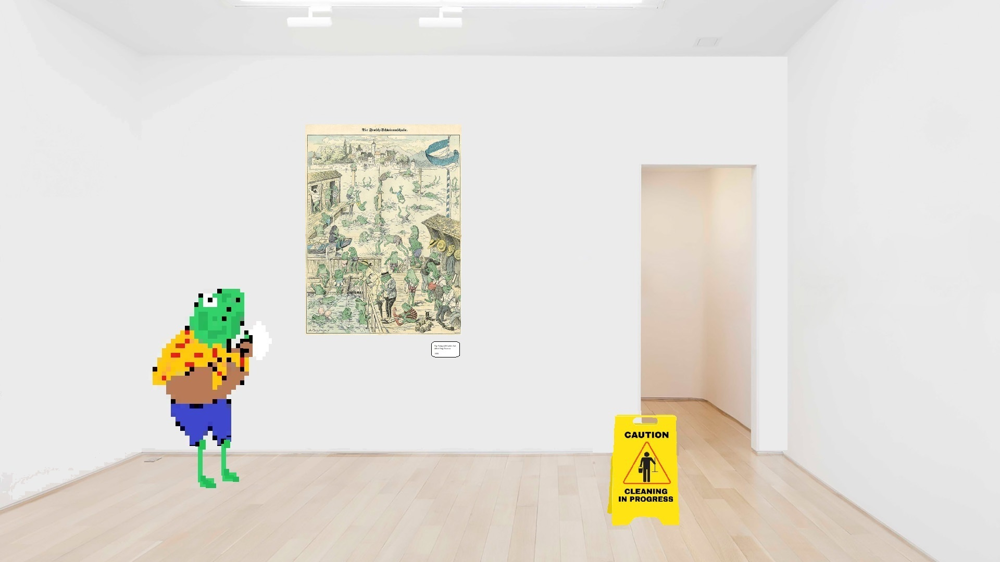

MARGINS, BORDERS & PADDING
The internet is made of boxes
Any HTML element on a website can be a "box" A picture of a horse. A paragraph of text. An interactive element, like a newsletter sign up form.
But how do we arrange these "boxes" on the page?
We are going to explore MARGINS, BORDERS and PADDING using the analogy of a painting/art gallery.
Any HTML element on a website can be a "box" A picture of a horse. A paragraph of text. An interactive element, like a newsletter sign up form.
But how do we arrange these "boxes" on the page?
We are going to explore MARGINS, BORDERS and PADDING using the analogy of a painting/art gallery.

We can think of a webpage like the wall of an art gallery. And we can
think of our elements as paintings. There are a number of paintings we
want to hang on our gallery wall. But first, take a look at the
painting above. In this analogy, the painting represents our element.
The area between the element and the border is called padding. The
border is our "picture frame." The margin is the empty space around
each picture.
HERE IS A BOX
This is the code I used to create the box pictured above. Here is the
HTML:

This is an example of a class I made to style the box. If I wanted to
change the padding, margin and border values of the yellow box I could
do so by editing the values below
The margin is the space around the “painting.” We can think of it as
an invisible barrier which surrounds each painting.

wow, the margins on these paintings sure are strange...
The border is the edge of the element or the painting. The border is
by default invisible, although it's easy to change the border's
colour, syle and size using css classes. You can think of the border
like a picture frame

hmm, this painting seems to have an invisible picture frame
Padding is the area between the border (picture frame) and the content
(picture of alligator riding mouse.) These paintings have no visible
padding. Maybe they'd look nicer with a little breathing room?

...

Perfect!